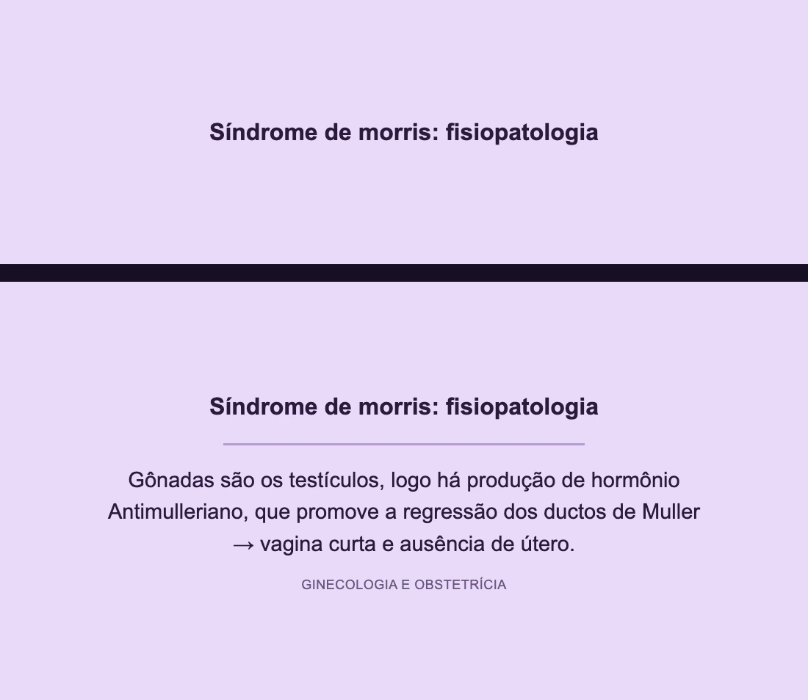
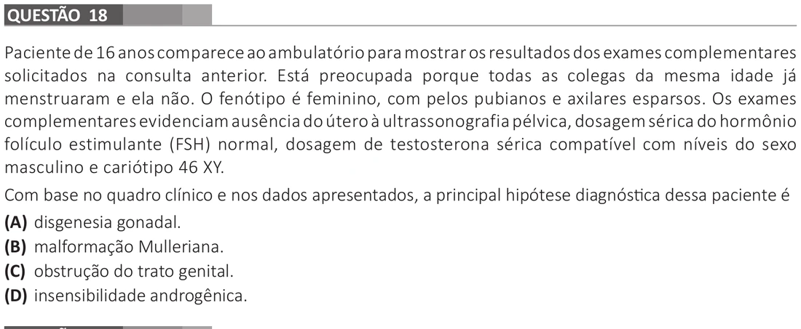
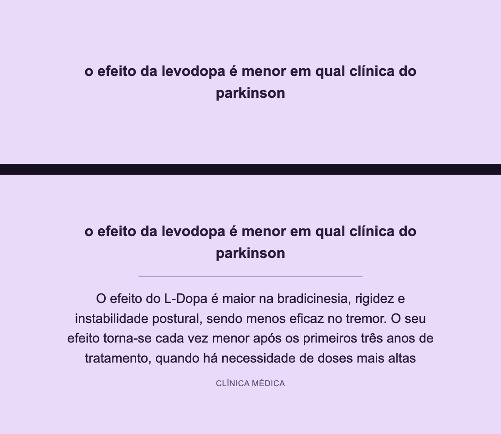
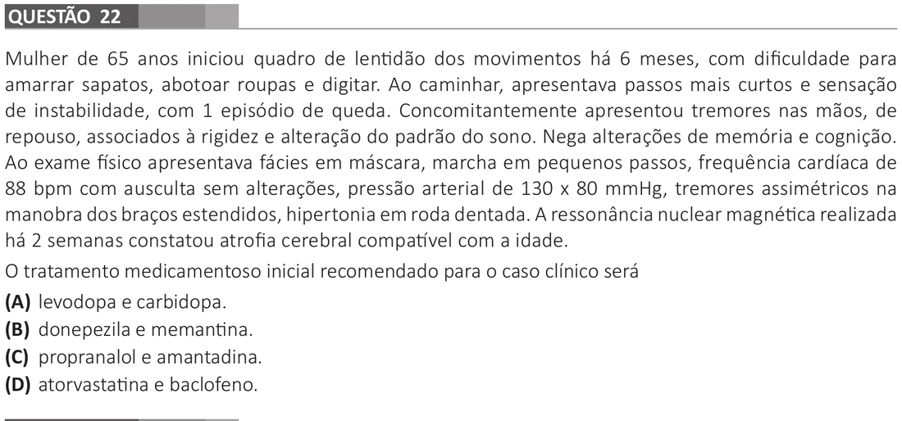
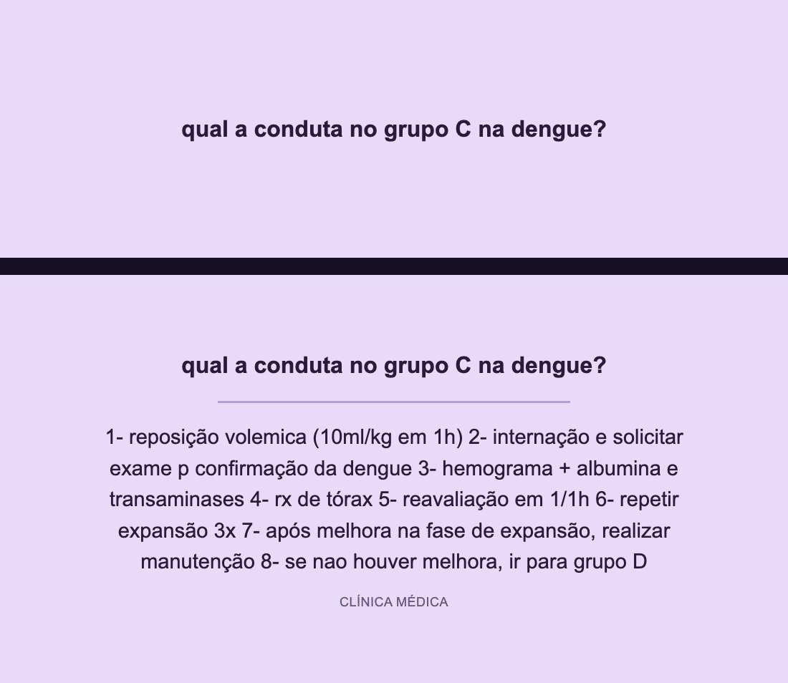
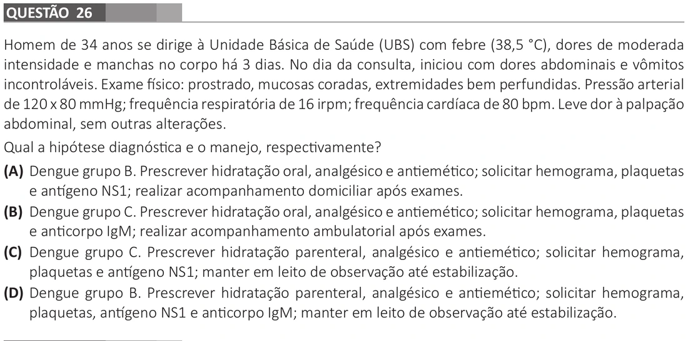
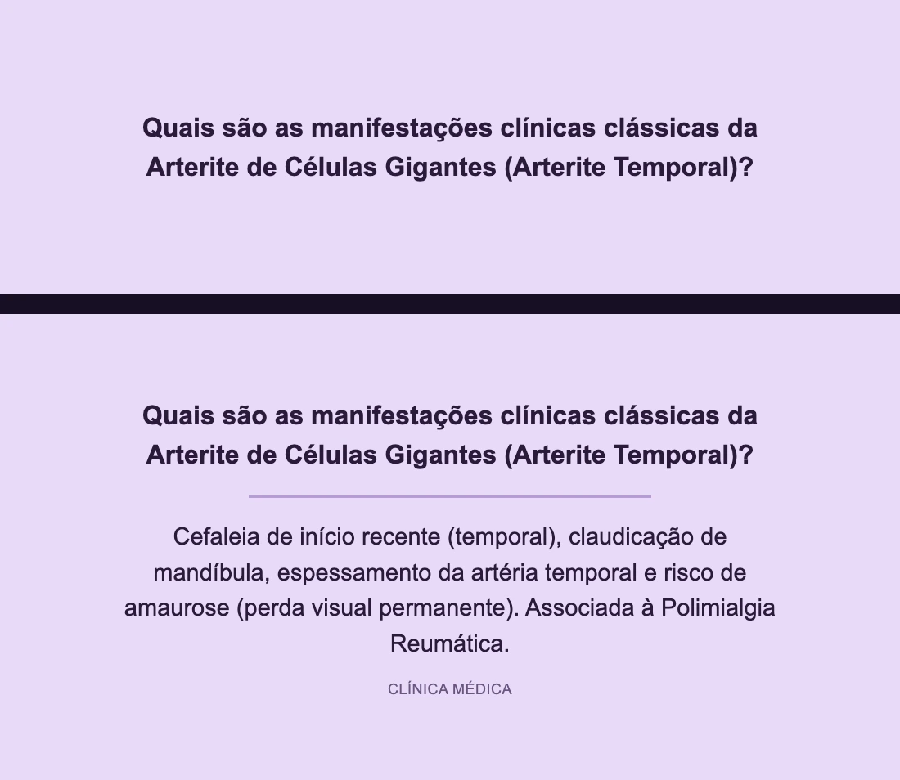
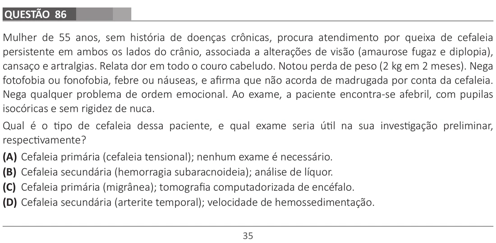

Imagine abrir a prova do ENAMED e reconhecer o raciocínio de cada caso clínico.
A última prova mostrou exatamente o nível de integração que você precisa dominar. Veja quatro exemplos:
Ginecologia · Insensibilidade Androgênica
No deck realEste card sobre a fisiopatologia da síndrome de Morris já estava no produto

esse raciocínio apareceu no ENAMED 2025
Na provaO ENAMED cobrou a integração dos achados clínicos

A relação com a questãoO card explica que, na síndrome de Morris, os testículos produzem hormônio antimülleriano, causando regressão dos ductos de Müller e ausência de útero. Na questão, o cariótipo 46 XY e a testosterona em nível masculino confirmam tecido testicular funcionante; o fenótipo feminino e os pelos escassos completam o raciocínio de resistência aos andrógenos. Assim, a alternativa compatível é insensibilidade androgênica. O card fornece a peça embriológica decisiva, embora as demais pistas do enunciado completem o diagnóstico.
Neurologia · Doença de Parkinson
No deck realEste card já relacionava levodopa e manifestações do Parkinson

esse raciocínio apareceu no ENAMED 2025
Na provaO ENAMED exigiu diagnóstico sindrômico e decisão terapêutica

A relação com a questãoO card registra que a levodopa atua principalmente sobre bradicinesia e rigidez. A questão descreve exatamente esses achados, além de tremor de repouso e marcha em pequenos passos, e pergunta pelo tratamento medicamentoso. Entre as alternativas, somente levodopa + carbidopa corresponde à terapia dopaminérgica da doença de Parkinson. O card não ensina isoladamente o papel da carbidopa, mas permite identificar a opção terapêutica correta.
Infectologia · Dengue com Sinais de Alarme
No deck realEste card já cobrava a conduta na dengue do grupo C

esse raciocínio apareceu no ENAMED 2025
Na provaO ENAMED cobrou classificação e manejo na atenção imediata

A relação com a questãoDor abdominal e vômitos persistentes são sinais de alarme, portanto o paciente deve ser classificado no grupo C. O card real já traz a conduta desse grupo: reposição volêmica, internação e reavaliação. Na prova, isso elimina as opções de tratamento oral e conduz à alternativa com hidratação parenteral e observação. Aqui, a relação é direta entre a conduta revisada e a resposta exigida.
Reumatologia · Arterite Temporal
No deck realEste card já reunia as manifestações clássicas da arterite temporal

esse raciocínio apareceu no ENAMED 2025
Na provaO ENAMED cobrou o reconhecimento da cefaleia secundária

A relação com a questãoO card associa arterite de células gigantes a cefaleia de início recente e risco de amaurose. A paciente da questão tem 55 anos, cefaleia nova, dor no couro cabeludo, amaurose fugaz e diplopia. Esse conjunto aponta para arterite temporal; entre as alternativas, apenas uma combina esse diagnóstico com um exame inflamatório útil, a velocidade de hemossedimentação. O card entrega o reconhecimento clínico necessário para chegar à opção correta.
É assim que os cards reais do deck funcionam.Em vez de copiar o enunciado da prova, o baralho divide conceitos, manifestações e condutas em perguntas curtas. No ENAMED, esses conhecimentos se combinam para resolver o caso clínico.
Quero revisar no nível do ENAMED
 Garantia Incondicional de 14 dias
Garantia Incondicional de 14 dias